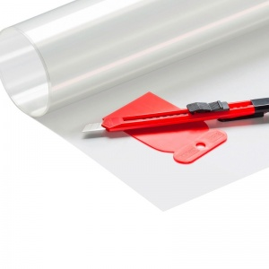

разбивание стекла, порезы
- на обратную сторону зеркала прикрепите защитную пленку, если оно и упадет, то не разлетится вдребезги. Проверьте крепление стеклянных полочек.

- при возникновении раны очистите поврежденный участок кожи от одежды;
- если рана не слишком глубокая, промойте ее под проточной водой, затем промокните края сухим ватным тампоном;
- рану обработайте дезинфицирующим раствором или перекисью водорода;
- положите стерильный бинт и забинтуйте;
- бинт следует накладывать выше раны, постепенно спускаясь вниз и плотно прижимая его к коже, закончите несколькими витками ниже раны;
- перевязку можно зафиксировать сверху при помощи эластичного бинта;
- глубокие раны или раны с наложением жгута бинтовать не следует: в таких случаях необходимо положить марлевую повязку и отправиться в больницу
ВАЖНО ЗНАТЬ:
- перекись водорода и марганцовка может использоваться только для открытых поверхностных ран, для глубоких их использовать нельзя;
- йодом и зеленкой необходимо обрабатывать только края раны, саму рану прижигать нельзя